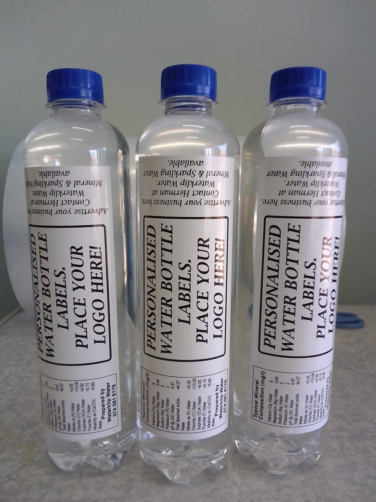

Waterklip
Suiwer water, gelaai met essensiële minerale —
soos die Karoo self: kragtig, skoon en eg.
Direk uit die hart van Suid-Afrika na jou tafel
Gesuiwer
Ons Verhaal
Gebore uit
passie vir suiwerheid
Waterklip is meer as net water — dit is 'n verbintenis aan jou gesondheid en aan die land wat ons liefhet. Ons besigheid is gegrond in die ryk tradisie van Suid-Afrika, geïnspireer deur die skoonheid van die Karoo en die kleurvolle blomme van Namakwaland.
Ons neem gewone water, suiwer dit volledig, en voeg dan presies die regte minerale terug — sodat elke sluk nie net skoon is nie, maar ook lewensgewend. Dit is die Waterklip-belofte: water wat vir jou werk.
Ons Produk
Hoe ons water
vir jou beter maak
Elke bottel Waterklip deurloop 'n noukeurige proses van suiwering en mineraalaanvulling — sodat jy water kry wat skoon én gesond is.
Inname & Toetsing
Elke water-bron word eers grondig getoets en ontleed om die basislynkwaliteit te bepaal.
Volledige Suiwering
Veelfase-filtrasie verwyder bakterieë, sware metale, chemikalieë en alle ander onsuiwerhede.
Minerale Aanvulling
Essensiële minerale word in die perfekte verhouding teruggevoeg — natuur se resep vir gesonde water.
Kwaliteitskontrole
Elke lot word getoets en sertifiseer voordat dit jou bereik — ons waarborg elke sluk.
Kristalhelder Suiwerheid
Ons omgekeerde osmose en UV-suiweringstelsel verseker dat elke druppel vry is van skadelike bakterieë, virusse, sware metale en chemikalieë. Die resultaat? Water so skoon dat jy dit kan sien, ruik en proe.
Lewendmakende Minerale
Suiwer water alleen is nie genoeg nie. Ons voeg 'n wetenskaplik gebalanseerde mengsel van essensiële minerale terug — vir smaak, gesondheid en lewendigheid.
Gegarandeerde Kwaliteit
Waterklip voldoen aan streng waterkwaliteitstandaarde. Ons verbintenis aan uitnemendheid beteken dat jy en jou gesin altyd die beste kan vertrou — elke dag, elke sluk.
Hoekom Waterklip?
Die verskil wat jy
kan proe
Nie alle water is gelyk nie. Hier is hoekom Waterklip uitstaan bo gewone kraanwater en baie ander bottelwater-handelsmerke.
Minerale wat Kraanwater Nie Het Nie
Gewone kraanwater word behandel maar die minerale word nie teruggevoeg nie. Waterklip gee jou water wat jou liggaam werklik voed.
Wetenskaplik Gebalanseerd
Ons minerale mengsel is wetenskaplik bepaal vir optimale gesondheidsvoordele — nie net smaak nie, maar werklike voeding.
Plaaslike Passie Agter Elke Bottel
Waterklip is 'n Suid-Afrikaanse besigheid, gedryf deur passie vir ons mense en ons land. Wanneer jy Waterklip koop, ondersteun jy plaaslike.
Geïnspireer deur die Karoo
Die Karoo is bekend vir sy suiwer lug en ongerepte natuur. Dieselfde reinheid en krag bring ons in elke bottel Waterklip.
Beter Hidrasie
Mineraalryke water word beter en vinniger deur die liggaam geabsorbeer — jy voel die verskil in jou energie en welstand.
Smaak wat Praat
Die regte minerale balans gee water 'n sagter, aangenamer smaak — skoon en verfrisend, soos 'n vars lentereën oor Namakwalandse blomme.

Nuwe Diens
Persoonlike
Waterbottels
Maak jou volgende geleentheid onvergeetlik met Waterklip-bottels wat jou eie logo of ontwerp dra. Perfek vir troues, korporatiewe geleenthede, konferensies of geskenke.
- Jou eie logo of ontwerp op die etiket
- Beskikbaar vir bestellings van enige grootte
- Dieselfde suiwer, mineraalryke Waterklip-water
Kontak Ons
Ons is hier
vir jou
Het jy 'n vraag, wil jy 'n bestelling plaas, of wil jy net meer weet oor Waterklip? Neem gerus kontak met ons op — ons is altyd bly om te help.
Volg Ons op Facebook
Bly op hoogte van nuus, aanbiedinge en inspirasie van Waterklip. Sluit aan by ons gemeenskap op Facebook!
Besoek Ons Facebook Bladsy